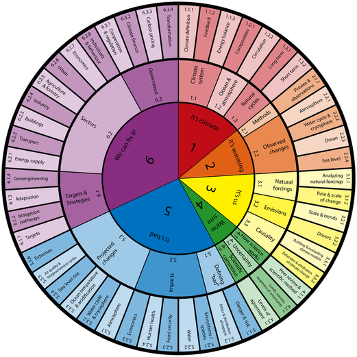

Lecture 5 Climate Mitigation
A five points “climate haiku”
- It’s warming
- It’s us
- We’re sure
- It’s bad
- We can fix it

Gagia identify
IPAT
\(I(mpact) = P(opulation) \times A(ffluence) \times T(echnology)\)
\(I(mpact) = \frac{P(opulation) \times A(ffluence)}{T(echnology)}\)
- Technology: renewable energy, energy efficiency, innovations
Climate wedges
Power sector
Transport
\(E = vehicles \times \frac{Miles}{vehicle} \times \frac{gallon}{mile} \times \frac{carbon}{gallon}\)
Building
Industry
Non-CO2
Carbon remove technologies
Carbon capture, utilization, and sequestration
Geoengineering
References
Pacala, Stephen, and Robert Socolow. 2004. “Stabilization Wedges: Solving the Climate Problem for the Next 50 Years with Current Technologies.” Science 305 (5686): 968–72. https://doi.org/10.1126/science.1100103.